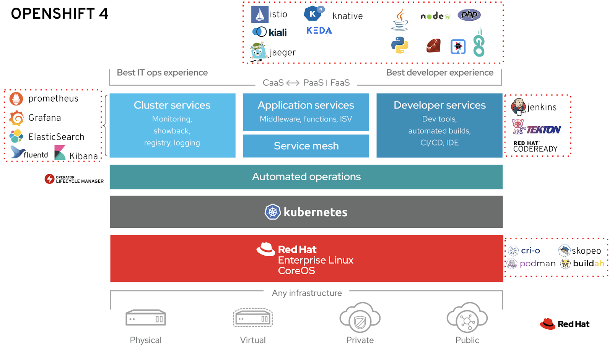

Container Runtimes/Managers, Base Images and Container Tools. Podman, Buildah & Skopeo¶
- Introduction
- OCI Project. Open Container Initiative
- Container Managers / Container Runtimes (CRI runtimes)
- Container Images
- Container Tools
- Images
- Tweets
Introduction¶
- A Practical Introduction to Container Terminology
- inovex.de: Welcome To The Container Jungle: Docker vs. containerd vs. Nabla vs. Kata vs. Firecracker and more! 🌟
- blog.alexellis.io: Building containers without Docker 🌟
- thenewstack.io: Container Best Practices: What They Are and Why You Should Care
OCI Project. Open Container Initiative¶
OCI Runtimes¶
runc¶
- runc CLI tool for spawning and running containers according to the OCI specification
crun¶
- crun A fast and lightweight fully featured OCI runtime and C library for running containers
OCI Monitors¶
- Conmon An OCI container runtime monitor.
Container Managers / Container Runtimes (CRI runtimes)¶
- containerd - An open and reliable container runtime 🌟 - The containerd GitHub repository hosts the source code and documentation for containerd, an open and reliable container runtime. It is a core component for running containers, often used by higher-level orchestrators like Kubernetes and Docker.
- Controlling Process Resources with Linux Control Groups (cgroups) - (Related to kubernetes topic)
-
What is Podman and How Does it Compare to Docker? - An article from Build5Nines providing a detailed overview of Podman, an open-source container engine developed by Red Hat. It explains Podman's key features such as its daemonless architecture, rootless execution, native pod support, and Docker-compatible CLI, and contrasts it with Docker's daemon-based model. The article aims to help developers transition between the two container management tools.
- Docker
- containerd.io
- Frakti
CRI-O¶
- cri-o.io Lightweight Container Runtime for Kubernetes
- Why Red Hat is investing in CRI-O and Podman
Podman. Pod Manager tool¶
- Podman.io
- Libpod: Library and tool for running OCI-based containers in Pods
- Libpod is a library used to create container pods. Home of Podman.
- Libpod provides a library for applications looking to use the Container Pod concept, popularized by Kubernetes. Libpod also contains the Pod Manager tool (Podman). Podman manages pods, containers, container images, and container volumes.
- Intro to Podman
- redhat.com: Be careful when pulling images by short name
- developers.redhat.com: Podman and Buildah for Docker users 🌟
- podmain.io: Announcing Podman v2 Featuring a new REST API, Remote Clients, Auto-update, Systemd Integration Improvements and more!
- youtube: Getting started with Podman
- Podman remote clients for macOS and Windows Podman manages your containers on a Linux host. Manage your containers from macOS or Windows by using the Podman remote client.
- developers.redhat.com: Rootless containers with Podman: The basics
- tecmint.com: How to Manage Containers Using Podman and Skopeo in RHEL 8
- thenewstack.io: Tutorial: Host a Local Podman Image Registry 🌟
- redhat.com: Using Podman and Docker Compose Podman 3.0 now supports Docker Compose to orchestrate containers.
- redhat.com: From Docker Compose to Kubernetes with Podman Use Podman 3.0 to convert Docker Compose YAML to a format Podman recognizes.
- fedoramagazine.org: Manage containers with Podman Compose
- medium: Podman: Getting Started
- oldgitops.medium.com: Setting up Podman on WSL2 in Windows 10 🌟
- youtube: Podman in Podman (Running a container within a container)
- "Forget about Docker image updating hassle. Podman offers simple auto updating capabilities. It works with conjunction with systemd. Just add label "io.containers.autoupdate=image" and run podman auto-update in cron or with help of systemd.timer and be done with it" puksiarz
- wbhegedus.me: Configuring Podman for WSL2 🌟
- redhat.com: How to replace Docker with Podman on a Mac Want to use Podman to work with containers? Here's what you need to know about Podman on a Mac.
- redhat.com: Exploring the new Podman secret command 🌟 Use the new podman secret command to secure sensitive data when working with containers.
- developers.redhat.com: Using Podman Compose with Microcks: A cloud-native API mocking and testing tool
- redhat.com: How to automate Podman installation and deployment using Ansible 🌟 Learn how to easily install and deploy Podman using Ansible in your environment.
- tutorialworks.com: How to Start Containers Automatically, with Podman and Systemd
- youtube: Podman 3 and Docker Compose - How Does the Dockerless Compose Work? 🌟
- fedoramagazine.org: Use Docker Compose with Podman to Orchestrate Containers on Fedora Linux
- opensource.com: Run a Linux virtual machine in Podman Use Podman Machine to create a basic Fedora CoreOS VM to use with containers and containerized workloads.
- developers.redhat.com: Transitioning from Docker to Podman 🌟
- pythonspeed.com: Using Podman with BuildKit, the better Docker image builder 🌟
- devopscube.com: Podman Tutorial For Beginners: Step by Step Guides 🌟
- kubernetespodcast.com: Podman, with Daniel Walsh and Brent Baude
- redhat.com: How to use auto-updates and rollbacks in Podman
- New auto-update capabilities enable you to use Podman in edge use cases, update workloads once they are connected to the network, and roll back failures to a known-good state.
- Podman: the best tool for running containers on the edge servers. On the edge you want no human intervention. Podman+systemd support auto-update of container image & rollback, when update fails.
- opensource.com: Get podman up and running on Windows using Linux Enable WSL 2 guests to run the podman, skopeo, or buildah commands from within Windows using the Linux distribution of your choice.
- crunchtools.com: Should I Use Docker Compose Or Podman Compose With Podman?
- medium.com: Exploring Docker alternative — Podman
- darumatic.com: Podman - Introduction 🌟
- redhat.com: Build Kubernetes pods with Podman play kube Enhancements include building images and tearing down pods with play kube and support for Kubernetes-style init containers.
- ==iongion.github.io: Podman Desktop Companion== 🌟 Cross-platform desktop integrated application with consistent UI
- redhat.com: How to replace Docker with Podman on a Mac, revisited Want to use Podman on macOS? There's a new way with podman machine. Here's what you need to know.
- imaginarycloud.com: Podman vs Docker: What are the differences?
- opensource.com: Run containers on Linux without sudo in Podman Configure your system for rootless containers.
- redhat.com: Create fast, easy, and repeatable containers with Podman and shell scripts
- redhat.com: How to use Podman to get information about your containers Use the podman ps command to get size, resource consumption, and other information about your containers.
- redhat.com: 5 Podman features to try now Improve how you use containers with these new Podman features: --latest, --replace, --all, --ignore, and --tz.
- Here's how I stop all containers before: 🐳
docker stop $(docker ps -aq)- Here's how I stop/remove all containers with podman:
podman stop -a; podman rm -a
- Here's how I stop/remove all containers with podman:
- medium.com/@raghavendraguttur: Podman Containers — Beginner’s Guide In this article, you will learn about Podman — an open-source tool for managing containers, images, volumes, and pods (group of containers). You will also compare it to buildah and skopeo.
- nilesh93.medium.com: Replacing Docker Desktop with Podman and Kind in MacOS
- ==dev.to: Containers without Docker (podman, buildah, and skopeo)== In this article, you will learn how you can use Podman, Buildah, and Skopeo as replacements for the traditional Docker workflow, without the use of a daemon or root privileges
- redhat.com/sysadmin/quadlet-podman Make systemd better for Podman with Quadlet. Quadlet, a tool merged into Podman 4.4, hides the complexity of running containers under systemd to make it easier to maintain unit files written from scratch.
Podman Desktop¶
Containers In High Security Environments with Podman¶
- Build trusted pipelines/Guards with Podman containers Container technology makes develoment easier/cheaper & much more secure. SELinux,SECCOMP,Namespaces,Dropped Capabilities.
Container Images¶
- sherifabdlnaby/kubephp 🐳 Production Grade, Rootless, and Optimized PHP Container Image Template for Cloud-Native Deployments and Kubernetes.
- iximiuz.com: In Pursuit of Better Container Images: Alpine, Distroless, Apko, Chisel, DockerSlim, oh my!
Red Hat Universal Base Image¶
- Introducing the Red Hat Universal Base Image 🌟
- What is Red Hat Universal Base Image?
- RH Universal Base Image FAQ
- Red Hat Ecosystem Catalog
- ubi-micro: RHEL tiny images to build containers 🌟
- developers.redhat.com: How to pick the right container base image
Container Tools¶
-
bul: Interactive TUI for Exploring Kubernetes Container Logs - (Related to kubernetes-tools topic)
-
How to use the --privileged flag with container engines Let's take a deep dive into what the --privileged flag does for container engines such as Podman, Docker, and Buildah.
- itnext.io: Docker, Kaniko, Buildah Different ways to build container images
- blog.kubesimplify.com: Getting started with ko: A fast container image builder for your Go applications
Buildah¶
- Buildah.io A tool that facilitates building Open Container Initiative (OCI) container images
- developers.redhat.com: Getting started with Buildah
- youtube: How to live without Docker for developers - Part 1 | Migration from Docker to Buildah and Podman
Skopeo¶
- Skopeo is a command line utility that performs various operations on container images and image repositories.
- Promoting container images between registries with skopeo
Images¶
Click to expand!

Tweets¶
Click to expand!
Running openvscode-server from #podman with:
— Forever Young (@gbraad) (@gbraad) October 27, 2021
podman pull https://t.co/eXpnV9qXTt
podman run -it --init -p 3000:3000 -v "$(pwd):/home/workspace:cached" gitpod/openvscode-server
Note; you might get a permission denied, is not aware of rootless use. Resolve with `chmod o+w -R` :-/
The RHEL/UBI 9 container images were released today! I'm quite happy with the size reduction! We have UBI Micro down to 7MB compressed! pic.twitter.com/PBU3cAApsp
— Scott McCarty (@fatherlinux) November 3, 2021
Some of the things I like about @Podman_io is this ability to generate K8s pod YAMLs from podman pods.
— SAIM SAFDAR (@cloudnativeboy) January 31, 2022
(1): deploy a pod named webserver with an Nginx container.
(2): generate the K8s YAML for the podman pod
(3): You can direct the generated YAML to a file with redirection pic.twitter.com/PTykINAS4A